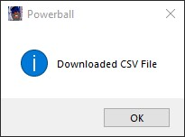
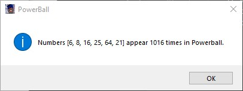

This started as a number counter to a fun little project to see if a lottery number could be predicted. While this is highly unlikely, it was a fun what if project. All this really is is a random number generator. However, I added the capability to download the past drawings of the Powerball and MegaMillions multi state lotteries from the NY state lottery.
Once numbers are generated, they are counted in the lottery CSV file and output on a popup window. They are also saved in a separate CSV so they can be reviewed later.
